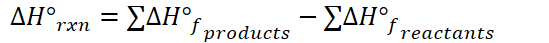
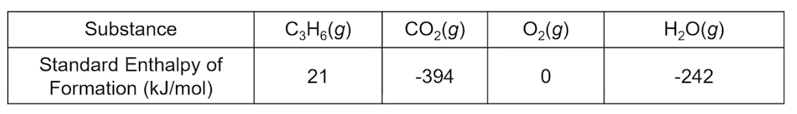
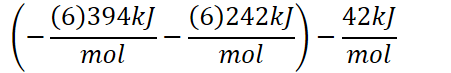
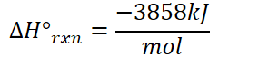

{width="9.71875in" height="0.7083333333333334in"}
Represents the change in enthalpy when a substance forms
Can be used to estimate the overall enthalpy change of a reaction
{width="4.052083333333333in" height="0.3541666666666667in"}
Specifies certain conditions
Any enthalpy with the degree sign can be directly compared in an "apples to apples" comparison across substances
For gases: 1 atm pressure
For liquids and solids:
For solutions:
Example:
Standard enthalpy of formation of CO~2~: -393.5kJ/mol
{width="6.385416666666667in" height="0.375in"}
{width="8.40625in" height="0.375in"}
0 is "sea level", in standard state
To calculate energy of a reaction using standard enthalpies
{width="5.71875in" height="0.4479166666666667in"}
Subtraction
Products minus reactants
Standard enthalpies of formation must be REVERSED when reactants are being broken
Example:
{width="5.958333333333333in" height="0.3333333333333333in"}
{width="8.041666666666666in" height="1.1458333333333333in"}
{width="4.697916666666667in" height="0.7604166666666666in"}
{width="4.625in" height="0.375in"}
{width="4.333333333333333in" height="0.375in"}
{width="2.9583333333333335in" height="0.65625in"}